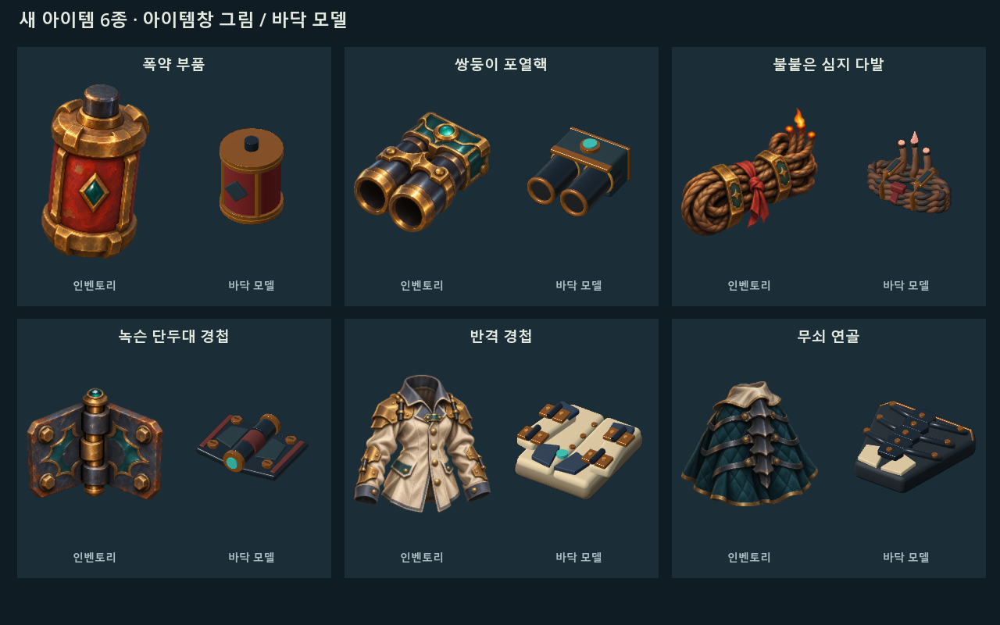
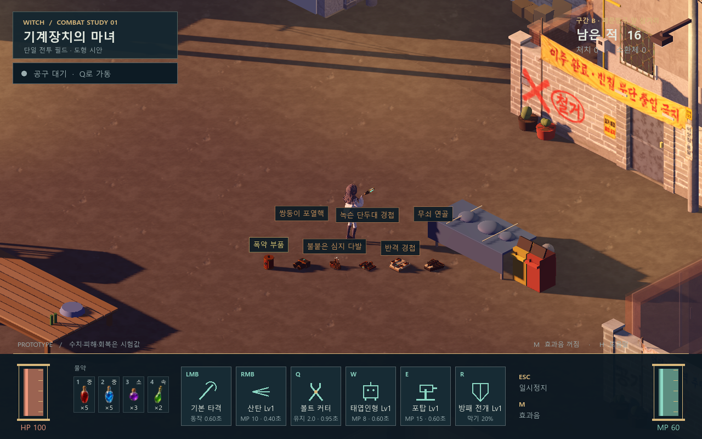

새 아이템 6종 · 아이템창 그림과 바닥 모델
폭약 부품, 쌍둥이 포열핵, 불붙은 심지 다발, 녹슨 단두대 경첩, 반격 경첩, 무쇠 연골.
임시 대체 이미지를 전용 그림과 모델로 바꿨습니다. 현재 아이콘 41종, 바닥 모델 45종을 모두 연결합니다.

그림은 내장 image_gen으로 생성했고 바닥 모델은 Blender에서 작성했습니다. 비교표는 형태를 살펴보기 위한 중립 반사 환경이며, 아래 필드 캡처는 기존 게임 조명입니다. 의상은 바닥에서 접힌 형태로 표시됩니다.
실제 게임에서 보기

기본 게임 카메라. 각 아이템과 라벨은 기존 간격/선택 규칙을 공유합니다.
확인 결과
최종 468개 검사 통과 · 실제 GPU 캡처 13장. 새 모델은 총 24,776삼각형이며 각각 하나의 메시와 최대 3개 표면을 사용합니다.
48개 낙하 시점의 바닥 지지, 5초 후 숨김, Alt를 놓았을 때 복원, 개별 강조와 습득 시 고유 ID 보존을 확인했습니다.
최초 병렬 회귀 실행에서 기존 아이템 우클릭 검사 1개가 실패했으며, 같은 게임 코드의 진단 실행과 단독 재실행은 통과했습니다.
전체 지형 충돌이나 최종 성능 검증을 의미하지 않습니다. 2026-11-05 사용자 커밋 요청으로 현재 외형을 프로토타입용으로 선택했습니다(기록).